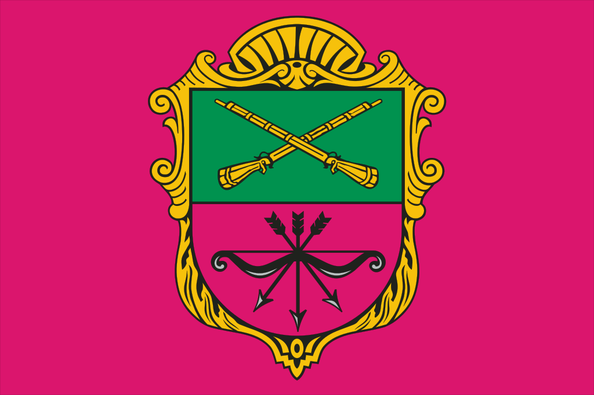

Запоро́жье (укр. Запорі́жжя, до 1921 года Александровск) — город на юго-востоке Украины, расположенный на реке Днепр.
Административный центр Запорожской области, Запорожского района и Запорожской городской общины.
Является одним из наиболее крупных административных, индустриальных и культурных центров юга Украины[8].
Население — 710,1 тыс. чел. (2022). Речной порт и важный транзитный железнодорожный узел.
Четвёртый по величине индустриальный центр Украины с развитым машиностроением, чёрной и цветной металлургией, химической и строительной промышленностью.
Многочисленные промышленные предприятия загрязняют городской воздух.
Содержание
- Этимология
- История
- Административно-территориальное деление
- География
- Экономика
- Образование и наука
- Культура и искусство
- Спорт
-
Достопримечательности
- Запорожский дуб
-
Острова
- Хортица
- Малая Хортица
- Другие мелкие острова
- ДнепроГЭС
-
Мосты Преображенского
-
Детская железная дорога
-
Проспект Соборный
Города-побратимы
Список литературы
